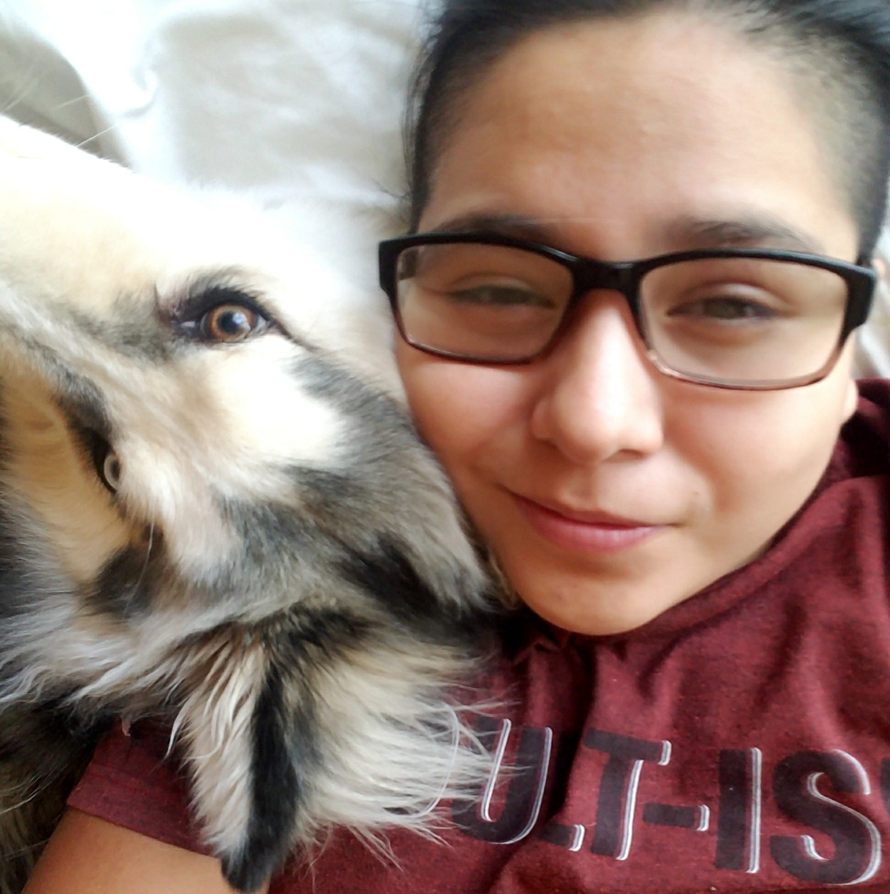

About Me
I am about 25% nerd, 25% fun lover, and 50% goofball; however, dog mom is my main career, and I have a malamute husky mix. His name is Barry, after Barry Allen the Flash. He is full of so much energy, and is always wanting my attention. It can be aggrivating, but I love him. He is the reason I became a dog handler at a dog hotel. We both love it there, and we have made so many friendships with all the dogs. We even have our favorites.
I also love super hero's, video games, and anime. I feel super heros's and anime have impacted so much on me. They are constantly fighting huge conflicts involving morality, and I have been exposed to these stories most of my adolecent life. That is why I feel they impacted me, because I believe they helped me evolve and understand my own beliefs. Video games have helped me enjoy problem solving, and grow a love and hate relationship with persistance. On one hand I will not give up on a puzzle no matter how many times I reset it, but on another it feels like I am in purgatory resetting an unsolvable problem. Despite that I will always enjoy the different lives, adventures, and lessons. I get to experience this all from my bedroom on a screen, and to me that seems like wizardry.